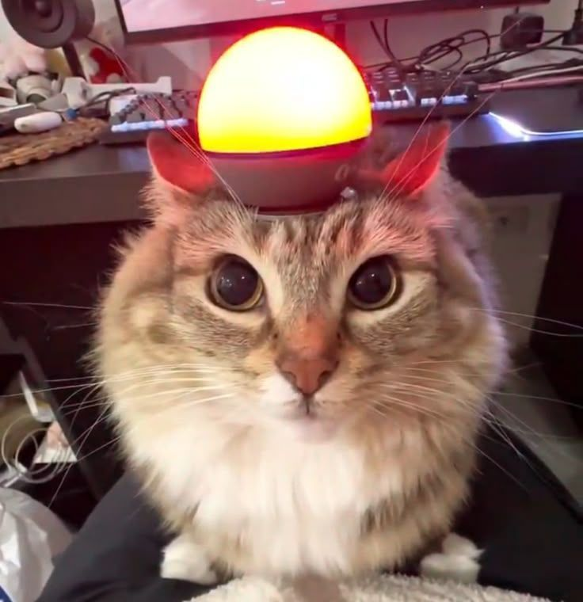
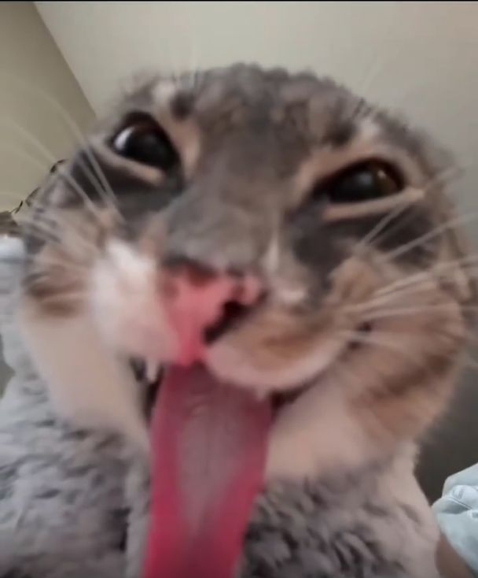
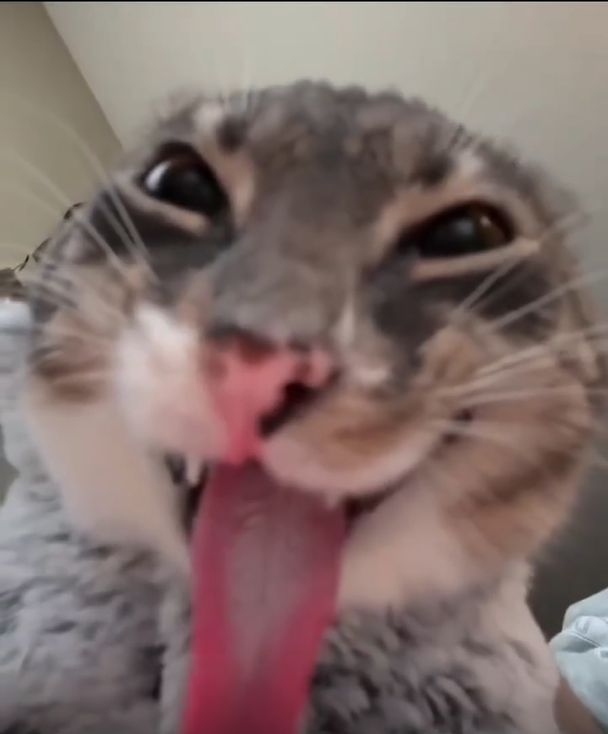
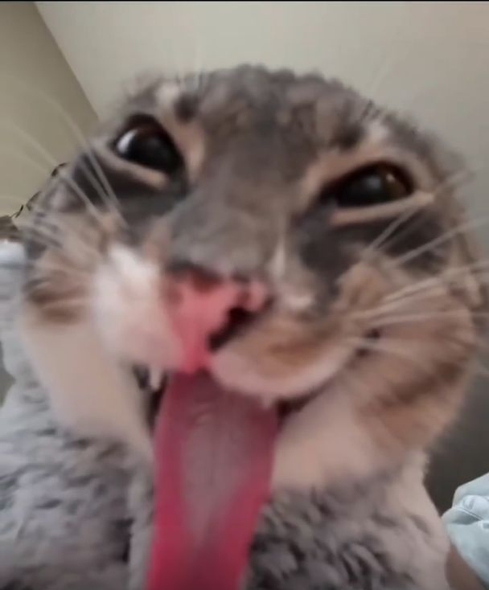

Котики
Ко́шка (лат. Felis catus) — домашнее животное, одно из наиболее популярных (наряду с собакой) «животных-компаньонов».
С точки зрения научной систематики, домашняя кошка — млекопитающее семейства кошачьих отряда хищных. Одни исследователи рассматривают домашнюю кошку как подвид дикой кошки, другие — как отдельный биологический вид.

 


Котики пиздец какие милые они прям супер мили, а еще если вам нуна пародия на котика то это джони